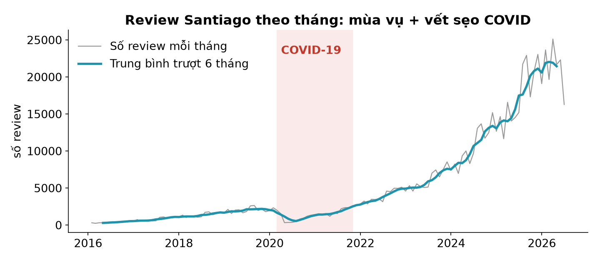

Lập trình
xử lý dữ liệu
Học kì 1, năm học 2026–2027
Viện Trí tuệ nhân tạo, Trường ĐH Công nghệ, ĐHQGHN
Bài 8
Xử lý dữ liệu thời gian
datetime, resample, rolling — và câu hỏi "so với cùng kỳ".
Buổi trước
- .str và regex: cột chữ thành cột tín hiệu.
- Còn một kiểu cột đặc biệt chưa đụng tới: cột ngày tháng.
690.112 review của Santiago — mỗi dòng một mốc thời gian. Buổi này ta khai thác câu chuyện từ chúng.
Tổng quan
- datetime trong pandas
- Trục thời gian: cắt lát, resample, rolling
- So sánh theo thời gian: shift & cùng kỳ
- Case study: mùa vụ Santiago
- Làm việc với AI thì sao?
1.
datetime trong pandas
"2026-06-29" là chuỗi. Muốn tính toán, phải đổi kiểu.
to_datetime: bước đổi kiểu bắt buộc
rv = pd.read_csv("reviews.csv", parse_dates=["date"])
rv.dtypes
listing_id int64
date datetime64[us]
Còn là chuỗi thì "2026-06" chỉ so sánh được theo bảng chữ cái. Thành datetime64 rồi thì trừ được, gom theo tháng được, hỏi "thứ mấy" được.
Bẫy định dạng ngày: 03/07 là ngày nào?
pd.to_datetime("03/07/2026") # kiểu Mỹ: 7 tháng 3!
pd.to_datetime("03/07/2026", dayfirst=True) # kiểu VN: 3 tháng 7
Timestamp('2026-07-03 00:00:00')
YYYY-MM-DD ở mọi file
bạn ghi ra.
Bộ thuộc tính .dt
rv["date"].dt.year.value_counts().sort_index().tail(3)
2024 131267
2025 211432
2026 128663
Một cột datetime "chứa sẵn" hàng chục cột con: .dt.year / .month / .dayofweek / .quarter / .date… — trích ra là groupby được.
Timedelta: khoảng cách giữa hai mốc
snapshot = pd.Timestamp("2026-06-29")
tuoi_nam = (snapshot - listings["first_review"]).dt.days / 365.25
tuoi_nam.describe().round(1).loc[["50%", "max"]]
50% 1.5
max 15.6
Trừ hai datetime → Timedelta. Nửa thị trường Santiago
có review đầu tiên chưa đầy 18 tháng trước — "tuổi đời" là đặc trưng mới sinh ra
từ một phép trừ. (Ghi chú thực tế: cột host_since ở snapshot này
trống 100% — schema drift ngoài đời thật.)
Múi giờ
- Dữ liệu log/API thường theo UTC; hiển thị theo giờ địa phương bằng tz_localize("UTC") rồi tz_convert("Asia/Ho_Chi_Minh").
- Ngày trong Inside Airbnb là ngày địa phương, không giờ — môn này không cần đào sâu; làm việc với log hệ thống thì bắt buộc phải biết.
2.
Trục thời gian:
cắt lát, resample, rolling
Đưa thời gian vào index — mở ra một bộ kỹ năng mới.
DatetimeIndex: cắt lát bằng chuỗi ngày
r = rv.set_index("date").sort_index()
len(r.loc["2026"]) # cả năm 2026
len(r.loc["2026-03"]) # riêng tháng 3
128663
Index là datetime thì .loc["2026-03"] hiểu là "mọi dòng trong tháng 3/2026" — partial string indexing, đặc quyền của trục thời gian.
resample: groupby theo lịch
theo_thang = r.resample("ME").size() # ME = Month End
theo_thang.tail(3)
date
2026-05-31 22296
2026-06-30 16267
2026-07-31 49
"ME" tháng, "W" tuần, "QE" quý, "YE" năm — split-apply-combine mà "khoá" là những ô lịch.
Vì sao tháng 7 chỉ có 49 review?
Snapshot chụp ngày 29/06 — "tháng 7" mới có vài giờ dữ liệu. Kỳ cụt (partial period) là bẫy kinh điển: luôn cắt bỏ kỳ chưa trọn trước khi vẽ/kết luận.
rolling: cửa sổ trượt làm mượt
thang_du = theo_thang.iloc[:-1] # bỏ kỳ cụt!
muot = thang_du.rolling(6, center=True).mean()
Mỗi điểm = trung bình 6 tháng quanh nó — nhiễu tháng-này-tháng-kia mờ đi, xu hướng lộ ra. Hình vẽ trên dữ liệu thật nằm ở phần Case study.
shift & pct_change: so với kỳ liền trước
(thang_du.pct_change() * 100).round(1).tail(2)
date
2026-05-31 3.0
2026-06-30 -27.0
pct_change() = x / x.shift(1) - 1. Tháng 6 giảm 27% so với tháng 5 — nhưng khoan kết luận: có thể tháng 6 năm nào cũng giảm như vậy.
"So với cùng kỳ": shift(12) trên chuỗi tháng
yoy = (thang_du / thang_du.shift(12) - 1) * 100
yoy.loc["2026-06-30"].round(1)
7.1
3.
Case study:
mùa vụ Santiago
Toàn bộ kỹ thuật vừa học, trên 690 nghìn review thật.
Mười năm trong một hình

Nhịp mùa vụ — đo, đừng đoán

Bài học kép từ một lần đo lại
- Mùa vụ chỉ đo trên các năm trọn. Bản nháp đầu gộp cả nửa đầu 2026 (chỉ có T1–T6) — các tháng đầu năm bị thổi phồng thành "đỉnh T1–T4" ảo.
- Đô thị có mùa ngược điểm nghỉ dưỡng: đỉnh mùa đông T7–T8 (trượt tuyết, nghỉ đông) và xuân T10–T11; đáy T2 — giữa hè, dân thành phố đi nghỉ nơi khác.
Số review là proxy, không phải nhu cầu
Nhóm bài tập lớn ở nam bán cầu (Santiago, Buenos Aires, Rio): mùa ngược với châu Âu — "so với cùng kỳ" càng quan trọng khi so chéo thành phố.
Tổng kết
to_datetime/parse_datestrước tiên; cẩn thận dd/mm; ISO khi ghi file.- Trục thời gian: cắt lát chuỗi
"2026-03",resamplegộp lịch,rollinglàm mượt. - So sánh:
pct_changekỳ trước,shift(12)cùng kỳ — dữ liệu mùa vụ dùng YoY. - Ba bẫy: kỳ cụt, mùa vụ đo trên năm không trọn, số review chỉ là proxy.
Làm việc với AI thì sao?
Kiểm chứng thế nào?
- In 2–3 kỳ đầu và cuối của kết quả resample — kỳ cụt lộ ra ngay.
- Chọn một tháng, tự đếm bằng
len(r.loc["2026-03"])đối chiếu với con số AI đưa.
Đọc thêm
- McKinney, Python for Data Analysis, 3rd ed. — ch. 11 (Time Series).
- 📖 Tự học: pandas User Guide — Time series / date functionality (bảng mã tần suất đầy đủ).